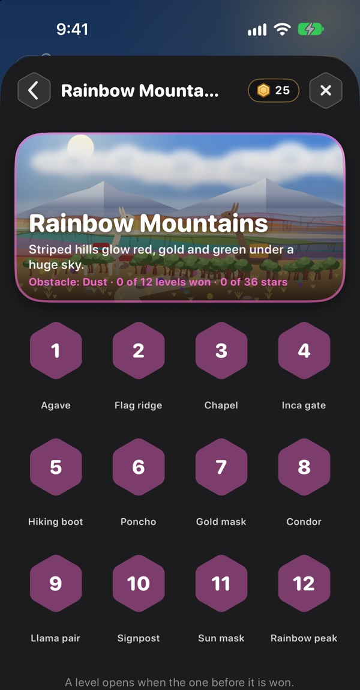

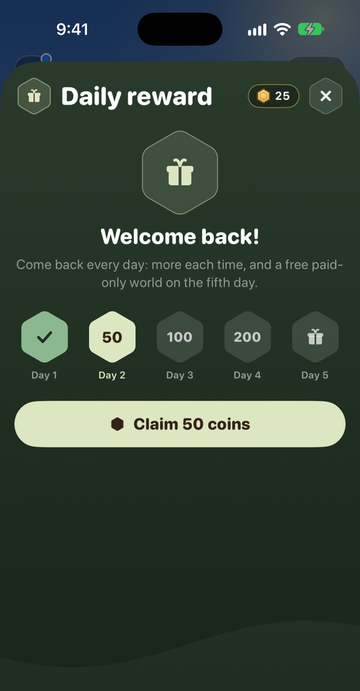
How it plays
Every level is a board of honeycomb cells, shaped like something from its world, with a goal, a number of moves and a clock on each move.
1Drag a piece
Pick one of three wooden pieces and let go where it fits on the honeycomb.
2Fill a line
Fill a whole line, in any of the three directions, and it clears. Longer lines score more, and so do quick moves and lines cleared together.
3Earn three stars
Clear the lines a level asks for before the moves run out. A win is a star, and a high score earns the other two.
Twenty worlds
Start in the Pine Forest and travel all the way to the Rainbow Mountains. Every world has its own scenery, music and nature sounds, and an obstacle of its own: frost, drifting sand, kelp, rockfalls, mirages, waves, cascades and more.
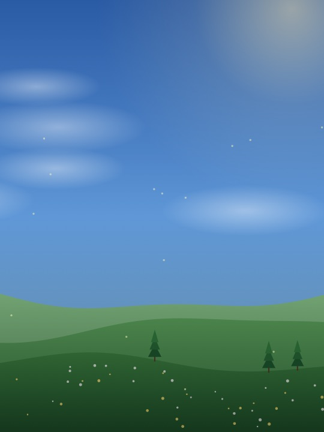
World 1Pine Forest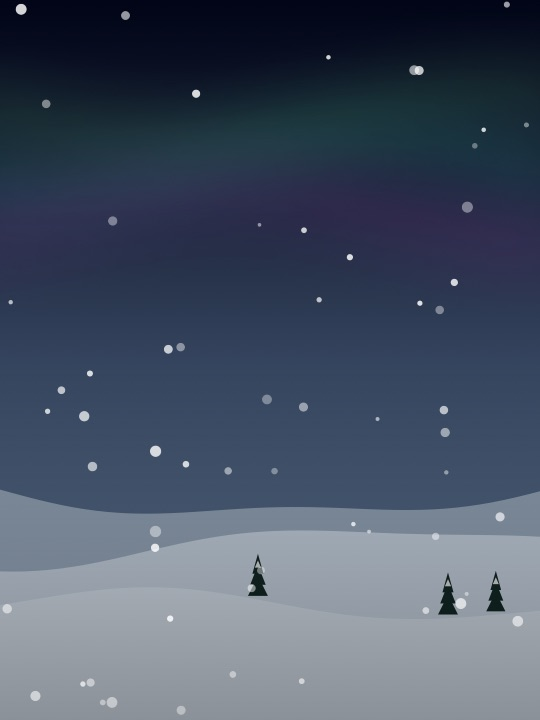
World 2Tundra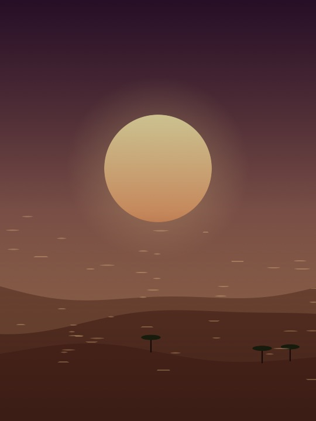
World 3Desert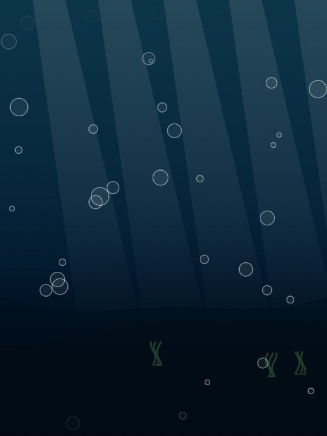
World 4Kelp Forest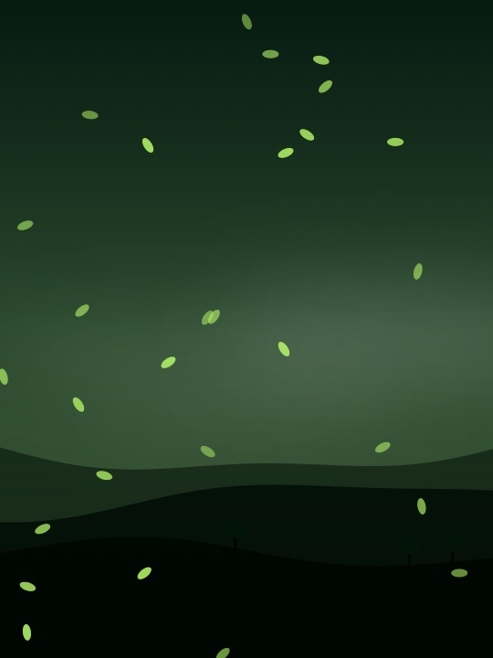
World 5Rainforest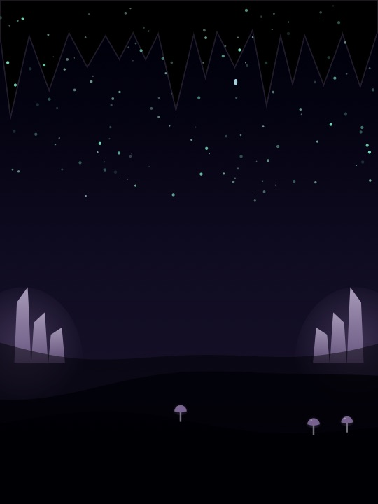
World 6Crystal Cave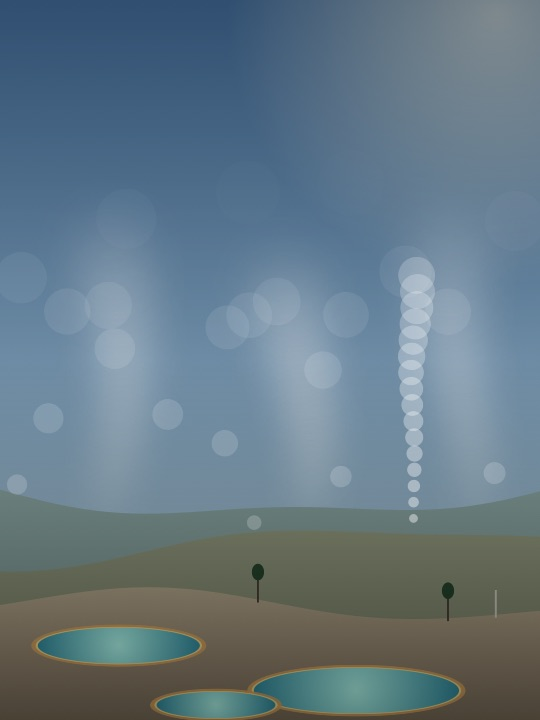
World 7Geyser Basin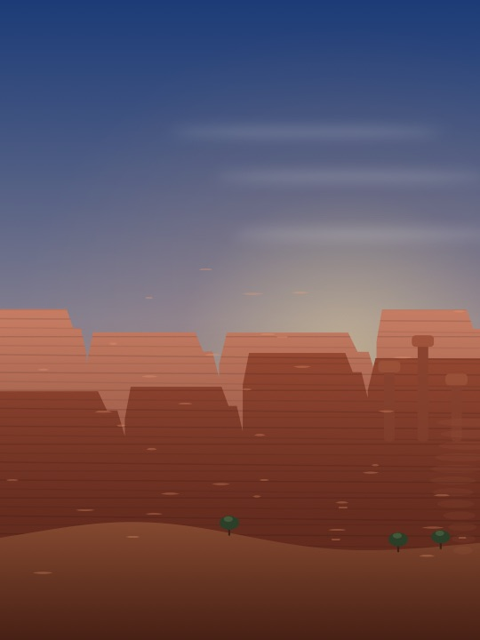
World 8Red Rock Canyon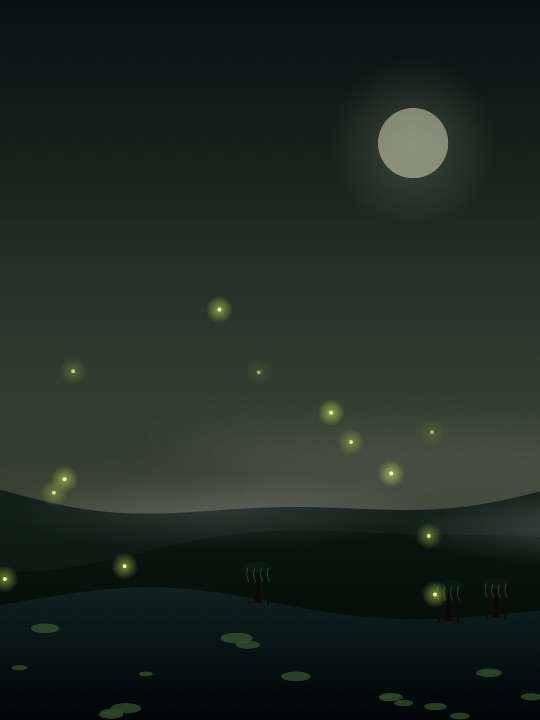
World 9Cypress Swamp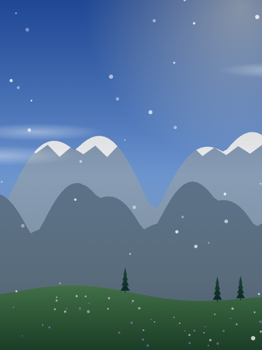
World 10Alpine Peaks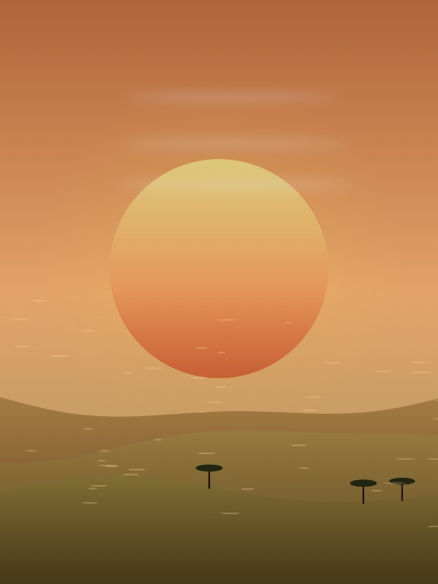
World 11Savanna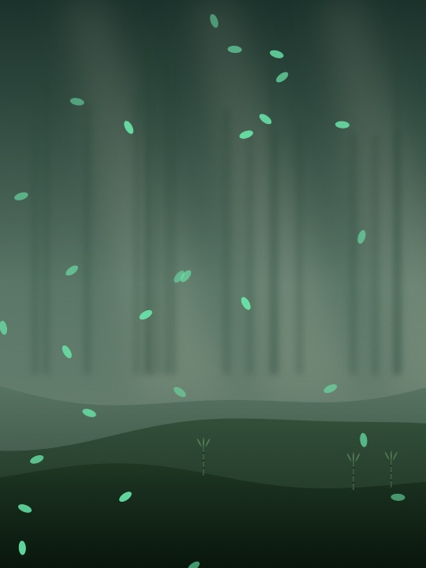
World 12Bamboo Forest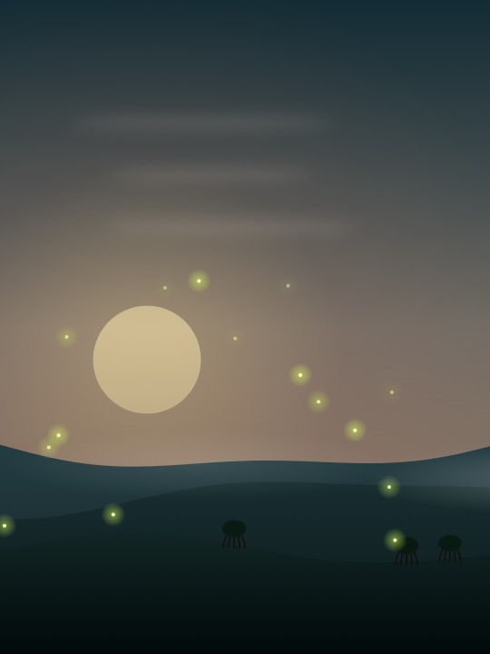
World 13Mangrove Coast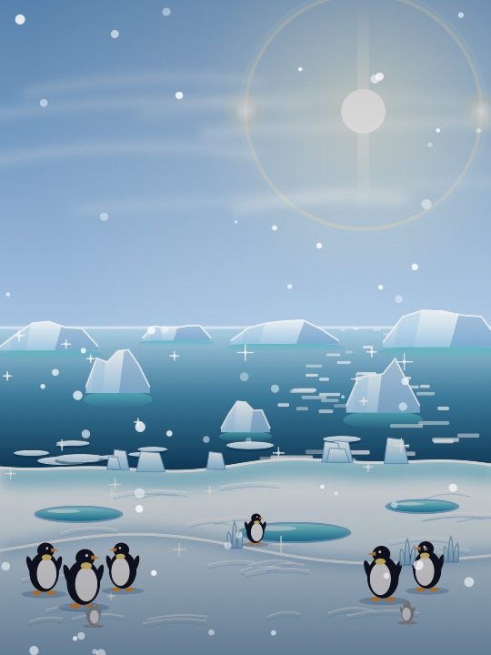
World 14Ice Shelf World 15Volcano Island
World 15Volcano Island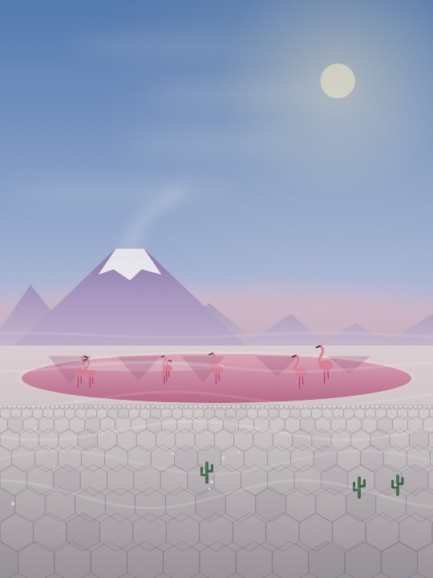
World 16Salt Flats World 17Beach
World 17Beach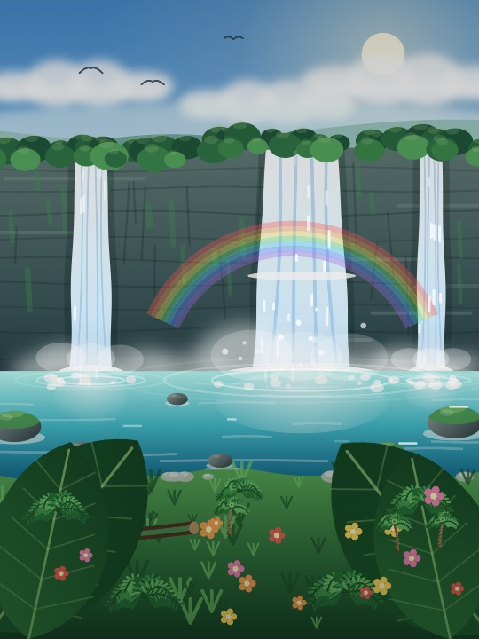
World 18Waterfalls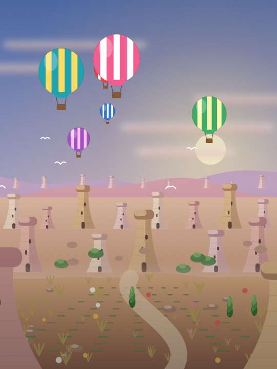
World 19Balloon Valley World 20Rainbow Mountains
World 20Rainbow Mountains
What's inside
Three stars on every level
Twelve levels in each of the twenty worlds, each a little trickier than the last.
Endless
A game that never ends and gets harder as you go.
Power-ups
Clear a line through a gold-ringed tile and you win a power-up: fresh pieces, or a burst that pops any one tile, even a wooden block.
Coins and daily gifts
Every level you win earns 25 coins. Lost a level? Spend coins, or watch a short video, to keep playing. A gift waits every day, and on the fifth day it is an extra world of your choice.
Six extra worlds
Northern Lights, Cherry Orchard, Monsoon, Coral Reef, Mirror Lake and Honey Meadow. Each is twice as long as the others, with its own obstacle and power-up, and all six come together in one purchase in the Shop.
Play your way
Relaxed play turns off the clock and the move count. Music written for each world plays over the sounds of nature, and there are achievements to collect.
Free, and no account
NatMatch! is free to play and needs no account: your progress is saved on your iPhone. It shows a banner at the bottom of the screen and a short ad between levels about every seven to eight minutes of play, never in the middle of a level, and you can choose to watch a short video to carry on a lost game. Remove Ads in the Shop turns every ad off for good. The privacy policy says exactly what is stored and what the ads involve.
Requires an iPhone with iOS 17 or later. Questions? See Support.